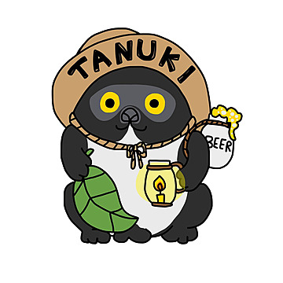

Mitologia Japonesa
Kami, yokai e as lendas do Japão Antigo
A Criação do Mundo
No princípio, não havia nada além de um oceano caótico e sem forma. Do vazio primordial, surgiram os primeiros deuses, que criaram o mundo flutuante. A mitologia japonesa é registrada principalmente no Kojiki (Registro de Assuntos Antigos, 712 d.C.) e no Nihon Shoki (Crônicas do Japão, 720 d.C.), que contam a história da criação do Japão e da linhagem divina dos imperadores.
O que é o Kojiki?
O Kojiki é o texto mais antigo sobre a história do Japão, compilado por ordem da Imperatriz Genmei. Ele combina mitos, lendas e história real, começando com a criação do mundo e terminando com o reinado da Imperatriz Suiko no século VII. É a principal fonte para a mitologia xintoísta.
Os Primeiros Kami (Deuses)
No início, três deidades surgiram no Takamagahara (Planalto Celestial):
- Ame-no-Minakanushi - O Senhor do Centro do Céu, a divindade primordial.
- Takamimusubi - O Kami da alta criação.
- Kamimusubi - O Kami da divina criação.
Depois deles, surgiram mais duas divindades:
- Umashiashikabihikoji
- Amenotokotachi
Estes cinco são conhecidos como os Kotoamatsukami ("Divinos Kami Celestiais Separados") e são considerados deidades sem forma que se retiraram após a criação.
Izanagi e Izanami - A Criação do Japão
As divindades mais importantes na criação são o casal divino:
- Izanagi-no-Mikoto ("O Homem que Convida")
- Izanami-no-Mikoto ("A Mulher que Convida")
Eles receberam a missão de criar a primeira terra. Em pé na Ponte Flutuante do Céu (Ame-no-ukihashi), agitaram o oceano com uma lança decorada com joias (Ame-no-nuboko). Quando retiraram a lança, as gotas que caíram formaram a primeira ilha, Onogoro-shima.
Desceram para a ilha e realizaram um ritual de casamento. Izanami falou primeiro, o que foi considerado inapropriado. Seu primeiro filho, Hiruko (a criança sanguessuga), nasceu deformado e foi colocado em um barco e abandonado.
Consultando os outros kami, aprenderam que o ritual deveria ser refeito com Izanagi falando primeiro. Desta vez, geraram com sucesso as oito grandes ilhas do Japão e muitas outras divindades.
A Morte de Izanami e a Descida ao Yomi
Quando Izanami deu à luz ao kami do fogo, Kagutsuchi, ela foi queimada mortalmente. Izanagi, em sua dor, matou Kagutsuchi com sua espada, e do sangue surgiram mais kami.
Izanagi decidiu ir ao Yomi (o submundo) para trazer Izanami de volta. Ele a encontrou, mas ela já havia comido a comida do Yomi e não podia retornar. Izanami pediu que ele esperasse enquanto ela pedia permissão para sair, mas Izanagi, impaciente, a seguiu e viu seu corpo em decomposição.
Envergonhada e furiosa, Izanami perseguiu Izanagi, que fugiu bloqueando a entrada do Yomi com uma grande rocha. Separados para sempre, Izanami se tornou a deusa do Yomi, prometendo matar mil humanos por dia, enquanto Izanagi prometeu criar mil e quinhentos por dia.
O Nascimento dos Três Kami Nobres
Após retornar do Yomi, Izanagi realizou um ritual de purificação:
- Quando lavou seu olho esquerdo, nasceu Amaterasu, a deusa do sol.
- Quando lavou seu olho direito, nasceu Tsukuyomi, o deus da lua.
- Quando lavou seu nariz, nasceu Susanoo, o deus das tempestades e do mar.
Izanagi dividiu o mundo entre eles:
- Amaterasu recebeu o Takamagahara (Céu) e o colar de joias sagradas.
- Tsukuyomi recebeu a noite e o reino da lua.
- Susanoo recebeu os mares.
O Imperador - Descendente de Amaterasu
A família imperial japonesa afirma descendência direta de Amaterasu, a deusa do sol:
- Os Três Tesouros Sagrados (espada, espelho e joias) são os símbolos desta linhagem.
- Até 1945, o imperador era considerado arahitogami (kami em forma humana).
- O Kojiki foi compilado em parte para legitimar o governo imperial.
- O Santuário de Ise, dedicado a Amaterasu, é reconstruído a cada 20 anos em um ritual de renovação.
Kami Principais
Na mitologia japonesa, os kami são divindades ou espíritos venerados no xintoísmo. Eles podem ser elementos da natureza, forças naturais, antepassados ou até mesmo conceitos. Diferente dos deuses ocidentais, os kami não são onipotentes nem perfeitos, mas possuem grande influência sobre o mundo humano.
AMATERASU - A Deusa do Sol
- Domínio: Sol, luz, fertilidade, ordem imperial.
- Símbolos: Espelho sagrado (Yata no Kagami), joias, arroz.
Amaterasu Omikami é a divindade mais importante do xintoísmo e ancestral da família imperial japonesa. Seu santuário principal é o Ise Jingu, o mais sagrado do Japão. Ela é conhecida por ter se escondido em uma caverna (Ama-no-Iwato), mergulhando o mundo na escuridão, até ser convencida a sair pelo truque dos outros kami.
SUSANOO - O Deus das Tempestades
- Domínio: Tempestades, mares, desafios, emoções violentas.
- Símbolos: Espada (Kusanagi-no-Tsurugi), dragões, serpentes.
Irmão de Amaterasu, Susanoo é uma figura complexa - tanto destrutiva quanto heroica. Após ser expulso do céu por seu comportamento violento, ele desceu a Izumo, onde matou o dragão de oito cabeças Yamata-no-Orochi e resgatou a espada Kusanagi, que se tornou um dos Tesouros Imperiais.
TSUKUYOMI - O Deus da Lua
- Domínio: Lua, noite, tempo, calendário.
- Símbolos: Lua crescente, arco, flechas.
Irmão de Amaterasu e Susanoo, Tsukuyomi é menos ativo nos mitos. Sua principal história envolve matar a deusa da comida, Uke Mochi, quando ela produziu alimentos de seu corpo de maneira repugnante. Isso causou a separação permanente entre o sol (Amaterasu) e a lua (Tsukuyomi).
INARI - O Kami da Prosperidade
- Domínio: Arroz, fertilidade, raposas, comércio, prosperidade.
- Símbolos: Raposas brancas (kitsune), espigas de arroz, chaves.
Inari é um dos kami mais populares no Japão, com milhares de santuários dedicados a ele/ela (Inari pode ser representado como masculino ou feminino). As raposas (kitsune) são seus mensageiros. Inari é especialmente venerado por agricultores, comerciantes e artistas marciais.
HACHIMAN - O Deus da Guerra
- Domínio: Guerra, arqueiros, proteção do Japão.
- Símbolos: Arco e flecha, pombo, estandarte militar.
Originalmente uma divindade agrícola, Hachiman tornou-se o protetor dos samurais e do povo japonês. Ele é frequentemente associado ao Imperador Ojin, que teria se tornado o kami Hachiman após sua morte. Seus santuários são facilmente reconhecidos pelos portões vermelhos (torii).
BENTEN - A Deusa das Artes
- Domínio: Música, artes, eloquência, riqueza, água.
- Símbolos: Biwa (alaúde japonês), serpente branca, dragão.
Benten (ou Benzaiten) é a única deusa entre os Sete Deuses da Sorte (Shichifukujin). Originária da deusa hindu Saraswati, ela é padroeira dos artistas, músicos e escritores. Muitas vezes é retratada tocando um biwa enquanto cavalga um dragão.
OKUNINUSHI - O Herói de Izumo
- Domínio: Medicina, magia, relacionamentos, negócios.
- Símbolos: Coelho branco, martelo, chapéu de palha.
Okuninushi é o protagonista de muitos mitos de Izumo. Ele superou inúmeras provações impostas por seus irmãos invejosos, ajudou um coelho branco ferido (que era na verdade um kami) e construiu o Japão com a ajuda do deus-coelho Sukunabikona. Seu santuário principal é o Izumo Taisha.
RAIJIN E FUJIN - Os Deuses do Trovão e do Vento
- Domínio: Trovão (Raijin), vento (Fujin), tempestades.
- Símbolos: Tambores (Raijin), saco de vento (Fujin).
Estes irmãos são frequentemente representados como figuras demoníacas. Raijin carrega tambores para criar trovões, enquanto Fujin carrega um saco cheio de ventos. Diz-se que eles protegeram o Japão do ataque dos mongóis no século XIII, enviando tempestades (kamikaze - "ventos divinos") que destruíram as frotas invasoras.
EBISU - O Deus da Pesca e da Fortuna
- Domínio: Pescadores, comércio, sorte, crianças.
- Símbolos: Peixe (principalmente o tai), vara de pescar, chapéu de pescador.
Ebisu é o único dos Sete Deuses da Sorte de origem puramente japonesa. Originalmente conhecido como Hiruko (o primeiro filho deformado de Izanagi e Izanami), ele superou suas dificuldades iniciais para se tornar o deus da pesca e da prosperidade. É frequentemente representado sorrindo e segurando um grande peixe.
KANNON - A Deusa da Misericórdia
- Domínio: Compaixão, misericórdia, cura, proteção.
- Símbolos: Lótus, jarro de água, criança nos braços.
Kannon (Avalokiteshvara no budismo) é uma figura sincrética adotada no panteão japonês. Ela ouve os sofrimentos do mundo e ajuda os necessitados. Existem 33 formas diferentes de Kannon, cada uma com atributos específicos. O templo de Sensoji em Tóquio é dedicado a ela.
DAIKOKU - O Deus da Riqueza
- Domínio: Prosperidade, agricultura, lar, cozinha.
- Símbolos: Malho da sorte, saco de tesouros, arroz.
Daikoku é um dos Sete Deuses da Sorte, frequentemente representado em pé sobre fardos de arroz, com um malho que concede desejos e um saco cheio de tesouros. Originalmente uma divindade tântrica (Mahakala), foi assimilado no panteão japonês como protetor das casas e da agricultura.
Yokai e Criaturas Míticas
O folclore japonês é repleto de yokai, criaturas sobrenaturais que podem ser benignas, travessas ou malignas. Estas entidades habitam o mundo natural e frequentemente interagem com os humanos, seja para ajudá-los, assustá-los ou puni-los por comportamentos inadequados.
Oni - Os Demônios Japoneses
Oni são criaturas semelhantes a ogros, geralmente com pele vermelha, azul ou preta, chifres e vestindo tangas de pele de tigre. Carregam porretes de ferro (kanabo) e são conhecidos por sua força bruta.
- Originalmente conceitos abstratos de males e doenças, tornaram-se personificados como demônios.
- No Setsubun (festival da primavera), as pessoas jogam feijões para "expulsar os oni".
- Alguns oni podem ser bons, como o guardião do inferno, Gozu (Cabeça de Boi) e Mezu (Cabeça de Cavalo).
Tengu - Os Espíritos das Montanhas
Os tengu são criaturas com características de humanos e aves (ou, em versões posteriores, narizes extremamente longos). Vivem em montanhas profundas e são mestres das artes marciais.
- Dividem-se em duas classes: karasu tengu (com cabeça de corvo) e yamabushi tengu (com nariz longo).
- Originalmente considerados perturbadores da ordem budista, tornaram-se protetores dos templos.
- Diz-se que o famoso guerreiro Minamoto no Yoshitsune aprendeu esgrima com o tengu Sojobo.
Kitsune - As Raposas Mágicas
Kitsune são raposas com poderes sobrenaturais que aumentam com a idade e sabedoria. Podem assumir forma humana, geralmente de belas mulheres.
- Servem como mensageiras de Inari, o kami das colheitas.
- Quanto mais caudas uma kitsune tem (até nove), mais poderosa e sábia ela é.
- Algumas kitsune são travessas (nogitsune), enquanto outras são benevolentes (zenko).
- Na forma humana, podem ser reconhecidas por sua sombra ou reflexo, que ainda mostram a forma de raposa.
Tanuki - Os Guaxinins Transformistas
Tanuki são criaturas semelhantes a guaxinins, conhecidas por sua natureza brincalhona e habilidade de se transformar. Diferente das kitsune, que são mais sérias, os tanuki são despreocupados e amorais.
- Podem inflar seus escrotos até tamanhos enormes e usá-los como paraquedas ou tambores.
- Estátuas de tanuki são comuns em restaurantes, trazendo boa sorte nos negócios.
- Um conto famoso fala de um tanuki que se transformou em um bule de chá (bunbuku chagama).
Kappa - Os Demônios dos Rios
Kappa são criaturas anfíbias do tamanho de crianças, com pele escamosa, bico de tartaruga e uma depressão no topo da cabeça que contém água, fonte de seu poder.
- Vivem em rios e lagoas, onde afogam pessoas e animais.
- São extremamente educados - se você fizer uma reverência, eles retribuirão, derramando a água de suas cabeças e perdendo seu poder.
- Podem ser apaziguados com pepinos, seu alimento favorito.
- Também são conhecedores de medicina e podem ensinar técnicas de cura aos humanos.
Yuki-onna - A Mulher da Neve
Yuki-onna é um espírito belo e fantasmagórico que aparece em noites de neve. Veste um quimono branco e tem pele pálida quase transparente.
- Flutua sobre a neve sem deixar pegadas.
- Pode congelar pessoas com seu sopro ou levá-las para nunca mais serem vistas.
- Em algumas histórias, ela se apaixona por humanos e poupa suas vidas, mas sempre desaparece quando a neve derrete.
- Pode ser uma manifestação do próprio inverno.
Nue - A Quimera Japonesa
O nue é uma criatura monstruosa com cabeça de macaco, corpo de tanuki, patas de tigre e cauda de serpente. Sua voz é descrita como o som sinistro de um tordo.
- Apareceu no século XII sobre o palácio imperial, causando doenças ao imperador.
- Foi afugentado pelo arqueiro Minamoto no Yorimasa, que mais tarde encontrou e matou a criatura.
- O incidente é considerado um dos primeiros relatos de yokai na história japonesa.
Rokurokubi - As Mulheres de Pescoço Elástico
Rokurokubi parecem mulheres normais durante o dia, mas à noite seus pescoços se estendem a comprimentos incríveis, ou suas cabeças se desprendem completamente para voar (nukekubi).
- Algumas são malignas, assustando pessoas ou bebendo seu sangue.
- Outras são inconscientes de sua condição, vivendo vidas normais.
- Em algumas histórias, são mulheres que cometeram pecados em vidas passadas.
Outros Yokai Notáveis
- Nurarihyon: O misterioso líder dos yokai, um velho com cabeça de abóbora que invade casas.
- Bakeneko/Nekomata: Gatos que ganham poderes sobrenaturais ao envelhecer, podendo falar, andar sobre duas patas e até reviver mortos.
- Jorogumo: Aranha yokai que assume forma de bela mulher para atrair vítimas.
- Noppera-bo: Criaturas sem rosto que assustam as pessoas, mas geralmente são inofensivas.
- Tsuchigumo: Homens-aranha que vivem em cavernas e atacam humanos.
- Umibozu: Espíritos do mar que aparecem durante tempestades, afundando navios.
- Zashiki-warashi: Espíritos infantis que trazem prosperidade às casas que habitam.
Fatos Curiosos
A mitologia japonesa não é apenas um conjunto de histórias antigas, mas uma parte viva da cultura japonesa que influencia arte, religião, festivais e até a vida cotidiana. Conheça alguns aspectos fascinantes desta rica tradição.
Xintoísmo e Budismo - Uma Coexistência Única
O Japão desenvolveu um sistema religioso único onde o xintoísmo nativo e o budismo importado coexistem harmoniosamente. Muitos japoneses praticam ambos:
- Xintoísmo para celebrações de vida (nascimentos, casamentos).
- Budismo para questões relacionadas à morte e ao além.
- Muitos templos budistas têm santuários xintoístas em seus terrenos e vice-versa.
- Alguns kami foram reinterpretados como manifestações de budas (honji suijaku).
O Imperador - Descendente de Amaterasu
A família imperial japonesa afirma descendência direta de Amaterasu, a deusa do sol:
- Os Três Tesouros Sagrados (espada, espelho e joias) são os símbolos desta linhagem.
- Até 1945, o imperador era considerado arahitogami (kami em forma humana).
- O Kojiki foi compilado em parte para legitimar o governo imperial.
- O Santuário de Ise, dedicado a Amaterasu, é reconstruído a cada 20 anos em um ritual de renovação.
Mitos Explicam Características Naturais
Como em outras mitologias, os mitos japoneses explicam fenômenos naturais:
- Terremotos: Causados pelo gigantesco peixe-gato Namazu, preso sob as ilhas pelo kami Kashima.
- Vulcões: Associados ao kami do fogo Kagutsuchi ou a divindades como Oyama.
- Marés e tempestades: Controladas por Watatsumi, o kami dragão do mar.
- Eclipse solar: Quando Amaterasu se esconde na caverna Ama-no-Iwato.
Festivais (Matsuri) Celebram os Mitos
Muitos festivais japoneses têm raízes em mitos antigos:
- Setsubun: Baseado no exorcismo de oni, com o lançamento de feijões.
- Gion Matsuri: Originado de rituais para apaziguar deuses da peste.
- Tanabata: Celebra o encontro das estrelas Orihime e Hikoboshi (Vega e Altair), amantes separados pela Via Láctea.
- Shichi-Go-San: Ritual de passagem para crianças de 3, 5 e 7 anos, idades consideradas perigosas segundo antigas crenças.
Kami Não São Onipotentes Nem Perfeitos
Uma característica marcante da mitologia japonesa é que os kami:
- São poderosos, mas não onipotentes - precisam de rituais humanos para manter seu poder.
- Têm personalidades complexas, com virtudes e falhas.
- Podem ser derrotados ou enganados por humanos astutos.
- Mudam com o tempo - kami locais podem ser "promovidos" a divindades nacionais.
- Podem morrer ou "se aposentar", sendo substituídos por outros kami.
Lista de Kami e Divindades Importantes
Kami Celestiais Primordiais (Kotoamatsukami)
| Nome | Função / Descrição |
|---|---|
| Ame-no-Minakanushi | Divindade primordial do céu |
| Takamimusubi | Deus da criação elevada |
| Kamimusubi | Deusa da criação divina |
| Umashiashikabihikoji | Deidade da terra fértil |
| Amenotokotachi | Deus eterno do céu |
Principais Kami do Xintoísmo
| Nome | Domínio |
|---|---|
| Amaterasu | Sol, luz, linhagem imperial |
| Tsukuyomi | Lua, noite, calendário |
| Susanoo | Mares, tempestades, caos |
| Inari | Arroz, prosperidade, raposas |
| Okuninushi | Negócios, medicina, casamentos |
| Hachiman | Guerra, proteção do Japão |
| Benten | Música, eloquência, água |
| Kannon | Compaixão, cura |
| Daikoku | Riqueza, cozinha, agricultura |
| Ebisu | Pesca, fortuna, alegria |
Deuses Relacionados aos Elementos Naturais
| Nome | Elemento / Natureza |
|---|---|
| Kagutsuchi | Fogo |
| Raijin | Trovão |
| Fujin | Vento |
| Shinatsuhiko | Brisas suaves |
| Takemikazuchi | Relâmpagos e espadas |